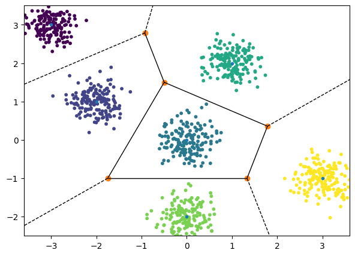

Unsupervised Learning - Clustering - K-means/Kernel K-means
PDF Link: notes
Introduction to Clustering
Clustering is a method of unsupervised machine learning that groups similar objects into clusters, discovering structure in data for exploratory analysis or as a pre-processing step for other algorithms.
Our objective is to group \(n\) datapoints into \(k\) clusters.
Notation: \[ \{x_1, x_2, \dots, x_n \} \hspace{6em} x_i \in \mathbb{R}^d \] \[ \{z_1, z_2, \dots, z_n\} \hspace{2em} z_i \in \{1, 2, \dots, k\} \] Objective Function: \[ F(z_1, z_2, \dots, z_n) = \sum _{i=1} ^{n} {|| x_i - \mu _{z_i} ||}_2 ^2 \] where \[ \mu _k = \frac{\displaystyle \sum _{i = 1} ^{n} {x_i \cdot \mathbf{1}(z_i=k)}}{\displaystyle \sum _{i = 1} ^{n} {\mathbf{1}(z_i=k)}} \] Goal: \[ \min _{\{z_1, z_2, \ldots, z_n\}} \sum _{i=1} ^{n} {|| x_i - \mu _{z_i} ||}^2 \] Unfortunately, finding a solution manually is an NP-Hard problem due to the existence of \(k^n\) possibilities. As a result, alternative approaches must be considered to address this challenge.
K-means Clustering (Lloyd’s Algorithm)
Lloyd’s Algorithm, also known as the k-means algorithm, is a widely used and straightforward method for clustering that divides a dataset into \(K\) pre-determined clusters by iteratively computing the mean distance between the points and their cluster centroids.
The Algorithm
The algorithm is as follows:
Step 1: Initialization: Assign \(z_1^0, z_2^0, \ldots, z_n^0\) where \(z_i^0 \in \{1, 2, \ldots, k\}\). The approach on how to initialize them is discussed later.
Step 2: Compute Means: \[ \mu _k ^t = \frac{\displaystyle \sum _{i = 1} ^{n} {x_i \cdot \mathbf{1}(z_i^t=k)}}{\displaystyle \sum _{i = 1} ^{n} {\mathbf{1}(z_i^t=k)}} \hspace{2em} \forall k \]
Step 3: Reassignment Step: \[ z _i ^{t+1} = \underset{k}{\arg \min} {|| x_i - \mu _{k} ^t ||}_2 ^2 \hspace{2em} \forall i \]
Step 4: Loop until Convergence: Repeat steps 2 and 3 until convergence for \(t\) iterations.
Fact regarding Lloyd’s Algorithm
Lloyd’s Algorithm, also known as K-means, is guaranteed to converge to a solution. While the converged solution may not be the optimal one, it has been observed to produce acceptable clustering results in practice.
Convergence of K-means Algorithm
The objective function strictly reduces after each reassignment. \[ F(z_1^{t+1}, z_2^{t+1}, \ldots, z_n^{t+1}) \le F(z_1^{t}, z_2^{t}, \ldots, z_n^{t}) \] And as there are only finite number of reassignments possible, the algorithm must converge.
Alternate Explanation: K-means algorithm converges because it is an iterative procedure that minimizes the sum of squared distances between points and their cluster centroids, which is a convex function with a global minimum. The algorithm will reach the convergence point, guaranteed to exist, under mild assumptions on the initial cluster means, making it a reliable tool for clustering.
Nature of Clusters Produced by K-means
Let \(\mu _1\) and \(\mu _2\) be the centroids of the clusters \(C_1\) and \(C_2\) respectively. \ For \(C_1\), \[\begin{gather*} {|| x - \mu _{1} ||}^2 \le {|| x - \mu _{2} ||}^2 \\ \therefore x^T(\mu _2 - \mu _1) \le \frac{||\mu _2||^2 - ||\mu _1||^2}{2} \hspace{2em} \forall x \end{gather*}\] The cluster regions are known as half-spaces or Voronoi regions.

But what if the dataset is as follow:

The standard k-means algorithm may not perform well when the underlying clusters in the dataset have a non-linear structure. In such cases, alternative methods such as Kernel K-means or Spectral Clustering can be employed to improve clustering accuracy. However, the intricacies of these methods will not be covered in this session.
Initialization of Centroids and K-means++}
One possible way to initialize the centroids is to randomly assign datapoints from the dataset as centroids. \ The other method is K-means++.The premise is to select centroids that are as far as possible from each other.
- Step 1: Choose \(\mu _1 ^0\) randomly from the dataset.
- Step 2: For \(l \in \{2, 3, \ldots, k\}\), choose \(\mu _l ^0\) probablistically proportional to score(\(S\)) where \(S\) is, \[ S(x) = \min _{\{j=1, 2, \ldots, l-1\}} {|| x - \mu _{j} ^0 ||}^2 \hspace{2em} \forall x \] The probabilistic aspect of the algorithm provides an expected guarantee of optimal convergence in K-means. The guarantee is given by, \[ \mathbb{E} \left[ \sum _{i=1} ^{n} {|| x_i - \mu _{z_i} ||}^2 \right ] \le O(\log k) \left [ \min _{\{z_1, z_2, \ldots, z_n\}} \sum _{i=1} ^{n} {|| x_i - \mu _{z_i} ||}^2 \right ] \] where \(O(\log k)\) is a constant of order \(\log k\).
- Step 3: Once the centroids are determined, we proceed with Lloyd’s Algorithm.
Choice of K
A pre-requisite of K-means is \(k\) or the number of clusters. But what if \(k\) is unknown? If \(k\) is choosen to be equal to \(n\), \[ F(z_1, z_2, \dots, z_n) = \sum _{i=1} ^{n} {|| x_i - \mu _{z_i} ||} ^2 = 0 \] But we don’t want as many clusters as datapoints. Therefore, \(k\) needs to be as small as possible. We do this by penalizing large values of k. \[ \underset{k}{\arg \min} \left [ \sum _{i=1} ^{n} {|| x_i - \mu _{z_i} ||} ^2 + \text{Penalty}(k) \right ] \] Two common criteria for making the above argument:
- Akaike Information Criterion: \(\left [ 2K - 2\ln(\hat{\mathcal{L}}(\theta ^*)) \right ]\)
- Bayesian Information Criterion: \(\left [ K\ln(n) - 2\ln(\hat{\mathcal{L}}(\theta ^*)) \right ]\)
Details for the same will be discussed in future lectures.
Credits
- Professor Arun Rajkumar: The content as well as the notations are from his slides and lecture.